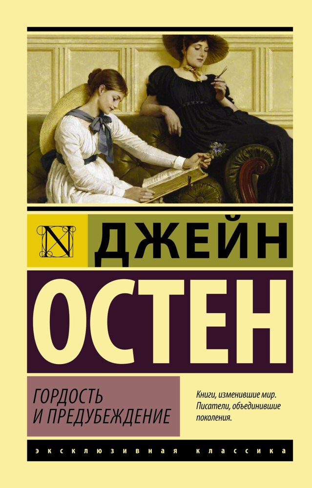
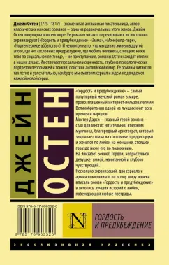
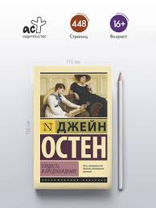
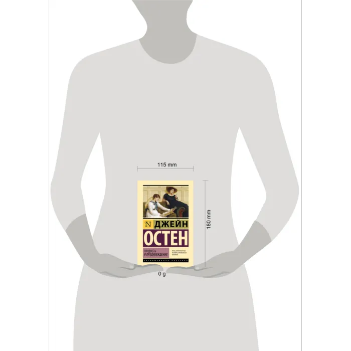

Гордость и предубеждение




Описание
В данной книге представлен один из самых известных англоязычных романов о любви всех времен в блестящем переводе признанного классика переводческого искусства — Иммануэля Самойловича Маршака. Дочь мелкопоместного сквайра Беннета Элизабет невзлюбила великосветского столичного сноба мистера Дарси. В свою очередь Дарси платит язвительной барышне взаимной неприязнью и едва удерживается в рамках вежливости... так, по крайней мере, оно выглядит со стороны. Однако в действительности чувства обоих далеко не столь однозначны...
- Автор: Джейн Остин
- Жанр: Роман
- Язык: Русский